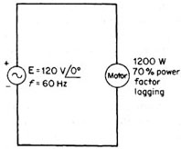

Question. Given the following circuit, calculate the value of the capacitor needed (in parallel) to obtain a circuit power factor of 100 percent.

Solution:
We know that when power factor is one, the angle between current and voltage is zero, since they are in phase. Voltage has a reference phase of 0°. Therefore, power factor will be 1.00 when the imaginary part of current is zero. Since we plan to solve this problem by simulating the circuit, the first step is to find the value of the complex load of the motor. We make this task by using a SCS Power tool called load().From the drawing, we have the following monophasic data: |P|=1200W, V=120<0°, and lagging power factor of 0.7. We assume 100% of load. Run the tool:
scs/load()
A drop-down dialog box appears, asking you to choose the type of data you know about the load. In our case, we know the monophasic real power, voltage, fp and percent of load. Therefore, we choose the fourth option: P1 + VLN + fp. After this, the program prompts a dialog box, where you must enter the values of these known variables. Input 1200, 120., 0.7, lagging and 100 (we are using the whole load). At this point, the program displays in the IO area and also stores in variables the phasorial values of S, V, I and Z that match the requested fp and percent.
Here is the Z value we were looking for. Write it down... 5.88+6.00*i
Now we will simulate the circuit. Draw a circuit with the source, the complex load of the motor and a capacitor with symbolic value cv. Label nodes and elements. Define variable cir as a matrix containing circuit description. I used this description:
[[e1,1,0,120,0][r1,1,0,5.88+6.00*i,0][cx,1,0,cv,0]]à cir
Simulate this circuit using direct current analysis.
scs/ac(cir,2*Pi*60)
Solve for cv when the imaginary part of expression of current through voltage source equals zero.
solve(imag(ie1)=0,cv)

Answer: 225 microFarads. This is the right answer for value of capacitor. Notice that using SCS this problem have been solved in only three steps, while by hand it takes a lot of steps.